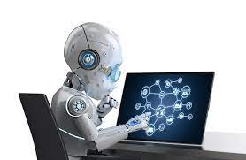
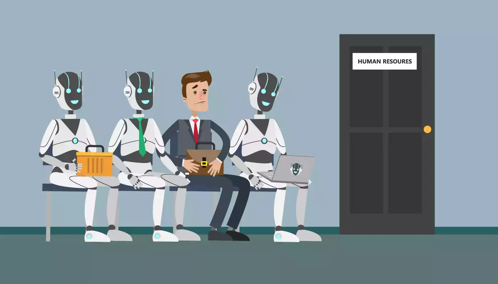
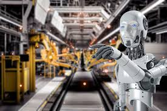
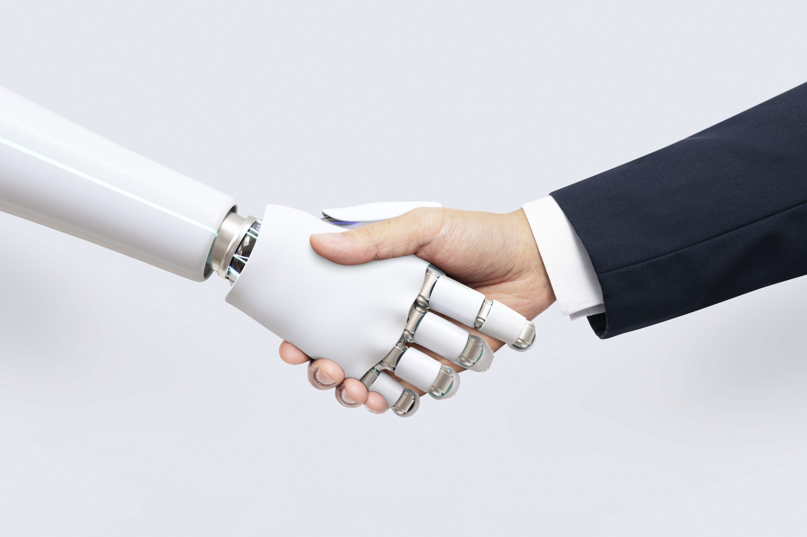

Enfoques de la Industria 4.0
- Basado en lo Social.
Por un
lado, permite crear nuevos bienes, estimulando así el aumento del nivel de vida
de la población. Por otro lado, la reducción de la participación humana en los procesos de
producción puede conducir al desempleo masivo.

- Basado en Competencias.
Los cambios estructurales (la
sustitución del trabajo manual (físico) por el intelectual) también van acompañados de cambios
cualitativos: el mantenimiento de los sistemas de producción física autogestionados requiere
de un especialista industrial moderno que posea nuevas competencias, que incluyen el
conocimiento y la capacidad para usar las nuevas tecnologías de la información y las
comunicaciones.

- Basado en Reproducción.
Significa la
modernización de la industria con la automatización a gran escala de los procesos de
producción. Se hace hincapié en el componente organizativo del funcionamiento de las
empresas industriales.

- Basado en el Comportamiento.
Prevé la transición a la interacción objeto-objeto, es decir, la eliminación del sujeto
(humano) del sistema de interrelaciones de objetos inanimados (dispositivos técnicos).
